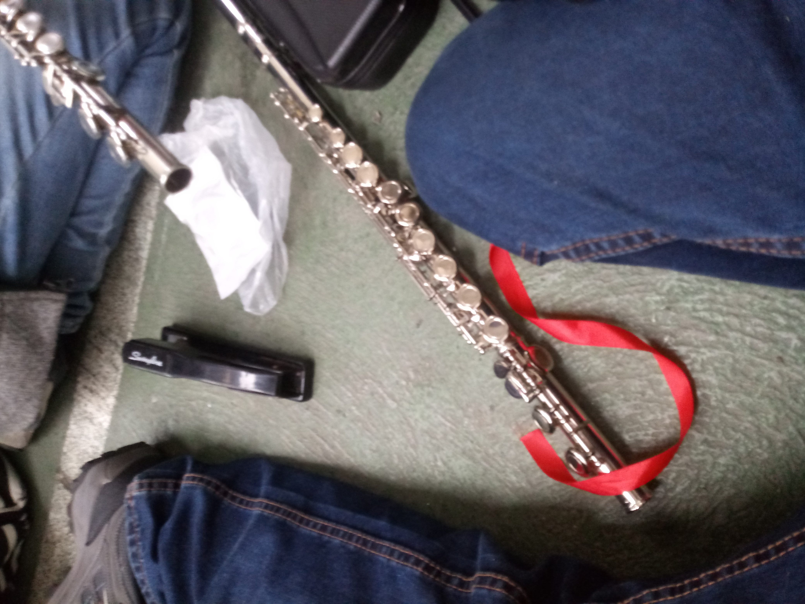
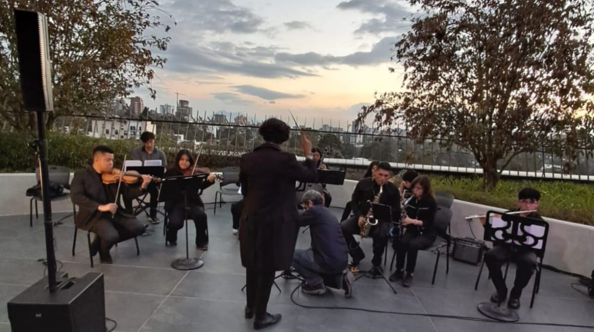
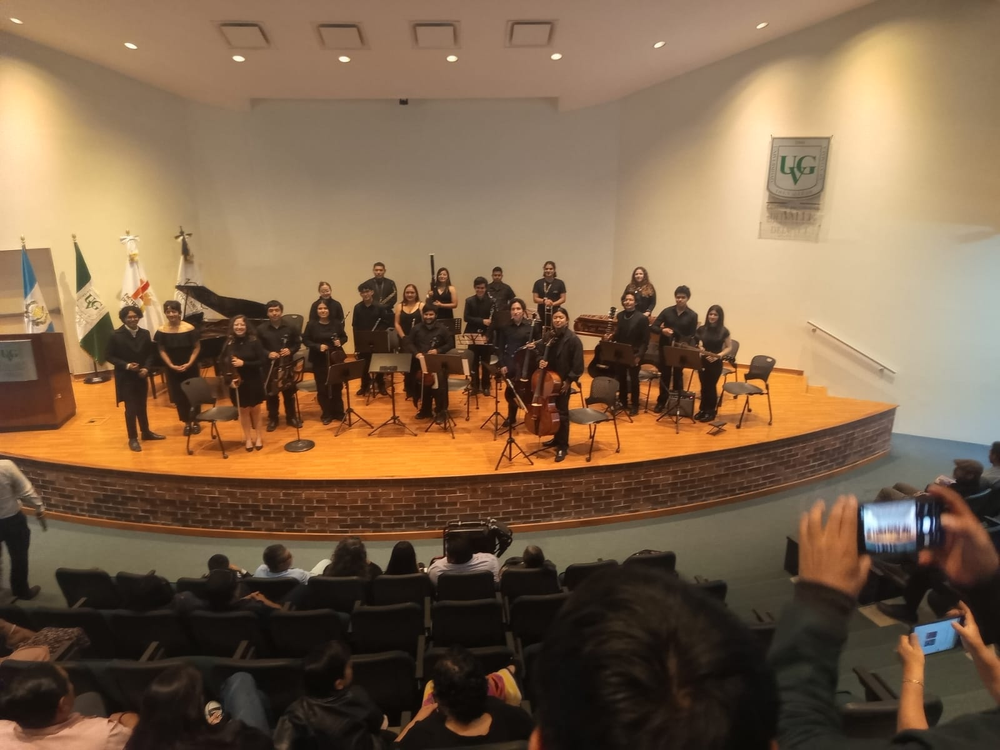
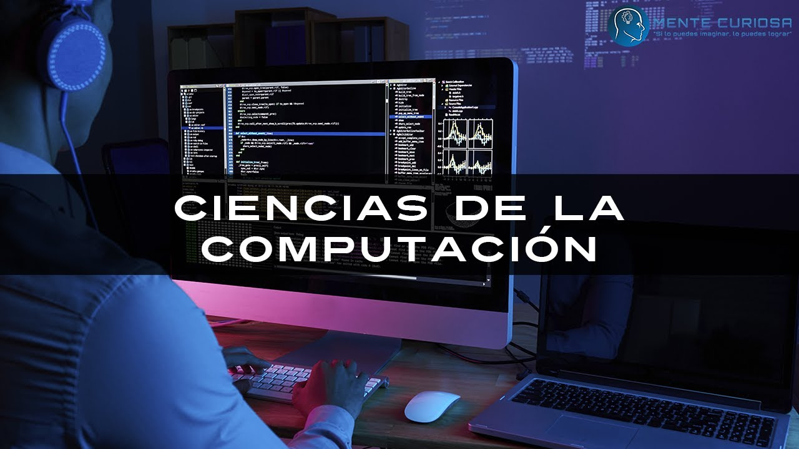
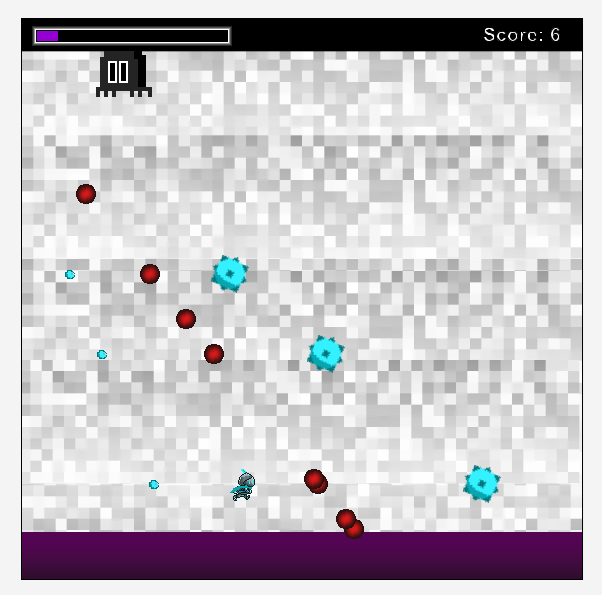

Mi Portafolio Universitario
William García - Introducción a la Ingeniería en Ciencias de la Computación y Tecnologías de la Información
Acerca de Mí
Conoce quién soy y muchas cosas más sobre mí
Acerca de Mí
Mi nombre es William Andrés García Hernández. Estudié Bach. en CCLL con orientación en Computación en el Colegio Italiano de Guatemala, carrera en la que terminé de darme cuenta de mi vocaciónn y pasión por la computación y especialmente por el área de redes. Tengo especial interés en el campo de redes, además en la creación y aplicación efectiva de sistemas para la resolución de problemas, como interés por aparte, también tengo pasión por la música. Al seguir la carrera persigo el sueño de ser uno de los Ingenieros más destacados, así tener acceso a oportunidades muy buenas, a contactos, y poder generar una empresa propia gracias a los conocimientos de vanguardia que me dé la Universidad.
Estudiante
Comprometido/a con mi formación
Músico
Parte de la orquesta universitaria
En crecimiento
Siempre buscando mejorar
Mi primer mes en la Universidad
Mi primer mes en la universidad ha sido bastante tranquilo, me encantan las instalaciones y ya he encontrado un lugar en el que me gusta pasar todos mis ratos libres. En cuanto a las clases me ha sido fácil adaptarme ya que siguen un modelo de trabajo coherente y constante, donde puedo organizar mis quehaceres para todas las semanas de la misma forma, e incluso en otras semanas son menos tareas por hacer ya que son semanas de parciales o trabajos en clase. Por el lado de la socialización no he forzado las cosas, sino que convivo cordialmente con las personas con quienes recibo clases y con quienes trabajo en grupos. Se me hace bastante interesante la cantidad de recursos que la universidad ofrece a sus estudiantes, por ejemplo, lo que más me sorprendió es que presten tablets para trabajar. No podría mencionar algo que haya sido de especial disgusto para mí, de hecho siento que mis expectativas fueron superadas en todos los aspectos. Todo ello me hace sentirme motivado a aprovechar todo lo que la universidad ofrece y así superarme cada día más en todos los ámbitos posibles.
Mis Cursos
Intro. a Ing. En Ciencias de la Computación
A lo largo de este curso he aprendido mucho acerca de diversos temas de conocimiento general de todo buen profesional de la computación. También he aprendido acerca de la importancia de la planificación antes de realizar un proyecto y cómo aplicarla. Además hemos trabajado programación en bloques.
Algoritmos y Programación Básica
En estoy aprendido acerca de algoritmos desde el nivel más básico. Y como yo ya sabía programar se me está haciendo fácil. Sin embargo no me parece inútil, sino que ha sido muy buena oportunidad para reforzar el lado teórico de la programación.
Precálculo
Hasta este momento, en el curso solo hemos visto contenidos que ya había visto en diversificado. A pesar de ello, me gustaría señalar que me encanta la forma práctica en que las clases son impartidad y que he aprendido muchos trucos para realizar más fácilmente algunos procedimientos.
Química General
Por el lado de la teoría, solo el inicio fue un repaso de todo lo que ví en la carrera. Mientras que a partir de ese punto he estado aprendiendo cosas nuevas, donde muchas son prácticas y lógicas, también de tipo algebraicas, por lo que se me facilita. Por el lado de laboratorio, me gusta que todo está bien planificado y se sigue un patrón para las tareas. Además hemos realizado procedimientos muy interesantes.
Ciencias de la Vida
Por el lado de teoría, los temas han sido explicados de una forma muy clara. Además, se complementan con el lado de laboratorio y permiten una mejor comprensión de los procedimientos realizados. De los cuales hemos realizado muchos, que me gustan muchísimo.
Comunicación Efectiva
Este curso me ha servido bastante para la mejora de mi redacción. Y recientemente hemos estado haciendo un artículo de opinión, es decir, pusimos todo lo que vimos en práctica. Además, lo siguiente es la presentación oral, que es un punto en el que sé que debo tranajar bastante, así que me alegra poder hacerlo en el curso.
Mi curso favorito es Precálculo
Es mi curso favorito porque siempre me han encantado las matemáticas. Además, a lo largo de mi vida como estudiante me he encontrado con muchos profesores que no explican las cosas de una forma satisfactoria. Entonces toca que buscar información en internet. Pero en este curso, la catedrática explica las cosas de forma muy completa e incluso nos da claves para que nos sea más fácil realizar los procedimientos.
Vida Universitaria
Orquesta Universitaria
Mi experiencia musical en la universidad
Este semestre me uní al club de orquesta de la universidad. En él, toco la flauta transversal. Ya hemos tenido dos mini-presentaciones, una para HCeres y autoridades de la universidad y otra para cerrar el pianotón. Pero aún falta la presentación principal, que será en unas cuantas semanas, lo cual me emociona mucho. Amo pertenecer a esta orquesta porque la música es muy importante para mí, me permite sentirme bien, olvidarme del estrés de otas cosas y las piezas suenan increíble.



Ciencias de la Computación
La concepción que he tomado de las ciencias de la computación es que se trata del estudio de todo lo relacionado con la computación, donde eso incluiría el campo más conocido que es el de la programación, pero también comprendería las bases sobre las que se construye ese campo, el funcionamiento de los dispositivos, su optimización, los sistemas que se han creado para operar con las computadoras, y también las aplicaciones que surgen a raíz de todo ello.
Creo que uno de los puntos más importantes a abordar con respecto a las ciencias de la computación es que todos los campos que aborda tienen como enfoque central la resolución de problemas. Por ello es que un científico de la computación es aquel que utiliza los conocimientos relacionados con la computación para diseñar soluciones a una diversidad de problemas, de modo que además se optimicen lo más posible esas soluciones.
En este campo, me veo trabajando en el ámbito de desarrollar soluciones a los diversos problemas de vulnerabilidad de los datos y sistemas que atraviesan las empresas. Este problema es bastante grande especialmente en Guatemala, donde la ciberseguridad es un campo en expansión. Así pues, utilizaría mis conocimientos para diseñar sistemas seguros y también para detectar y solucionar vulnerabilidades. Además pienso que utilizaría bastantes conocimientos acerca de redes y el envío de paquetes, siendo el tema de networks mi preferido en el campo de la computación.

Mis Logros
Intro. a Ing. en Ciencias de la Computación
En este curso destaco el desarrollo de un videojuego haciendo uso de Greenfoot, donde se creó un videojuego de tipo bullet hell y se aprendió a generar clases y actores para fungir de enemigos, jugadores, proyectiles, etc.
Así también se aprendió a programar en Java para que se detecten colisiones y se implementen funcionalidades como una barra de progreso, un puntaje y una pantalla de game over.
En este proyecto, el aprendizaje más importante que tuve fue aprender a utilizar Git y un repositorio en GitHub para trabajar de una forma mucho más cómoda y eficaz junto a mi grupo de trabajo.

Ciencias de la Vida
En este curso uno de los trabajos a destacar es el laboratorio No. 13, correspondiente a la visita que se realizó a la colección biológica UVG y al jardín botánico UVG.
De estas visitas se obtuvieron muchos conocimientos y se analizaron las características de los organismos observados.
También se puede destacar la nota máxima obtenida en grupo para el caso integrador número 3.

Lo que me llevo de este semestre
De este semestre me llevo mucha motivación, puesto que me ha encantado la metodología y la calidad de enseñanza que tiene la universidad, sumado a que me fue increíblemente bien. También en este semestre he definido mejor mi forma de trabajar.
En cuanto al área de mi carrera, me he quedado muy satisfecho con los conocimientos obtenidos y con el deseo de aprender muchísimo más; por ello es que he reconfirmado mi deseo de seguir esta carrera universitaria.
Así también me he quedado con el deseo de conocer a muchas más personas, para encontrar aquellas con las que pueda generar una gran confianza.
Reflexión del Ciclo
Lo que salió bien
Durante este ciclo he tenido buenos logros, como sacar excelentes calificaciones en parciales de precálculo y química. También tener el 100% de calificación en Intro a la Compu. Y agregaría que he sido capaz de organizar mis tiempos para dormir temprano.
Lo que salió mal
Como cosas que salieron mal podría mencionar que no tuve la disciplina para mantenerme hacinedo ejercicio de forma constante. También que en algunos proyectos grupales no ha habido el mismo interés en ellos por parte de algunos integrantes y eso hace que la mayor carga recaiga sobre quienes si nos interesamos más.
Qué he aprendido
He aprendido a trabar en equipo, redactar, opinar, estructurar mejor textos y a comunicarme oralmente de la mejor manera. He aprendido a realizar informes científicos, a citar correctamente en APA7, a planificar la creación de un algoritmo y mucho más.
Qué me dejó con dudas
Principalmente algunos temas de química general, pues ha habido temas que he necesitado estudiar también con videos y con ChatGPT explicandome. Y luego por falta de tiempo, no he terminado de entender todos los conceptos al 100%.
Comentarios
Lo que dicen mis familiares y personas cercanas sobre mi portafolio
Karin Hernández
Estoy muy orgullosa de todo lo que has logrado, simplemente con que estés en esa universidad, sigue esforzandote y aprendiendo mucho!
Salvador García
Me alegro mucho por ti. Aprovecha está oportunidad.